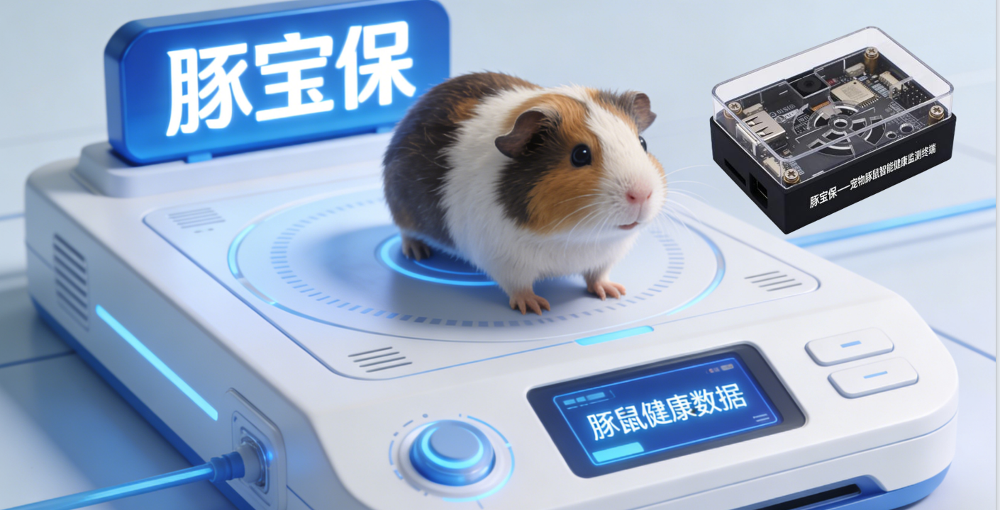
依托团队在计算机视觉与动物行为分析领域的深厚积累，以K230边缘芯片为核心，打造全球首款专为豚鼠设计的多模态智能健康监测终端，通过视觉+听觉融合感知实现运动量统计、疾病早期预警及每日健康报告推送，精准填补「科研级没法用、消费级用不了」的市场空白
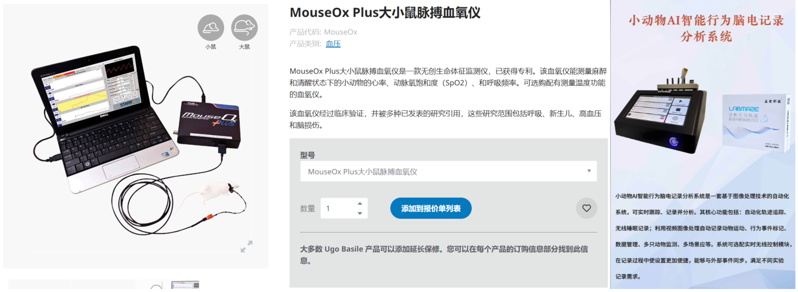
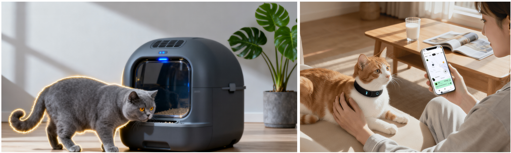
科研级设备虽精度高但成本高昂，操作复杂，完全无法适用于家庭场景
90%设备为猫狗设计，既鼠专用设备几乎为零
科研级没法用、消费级用不了的市场空白亟待填补
✓ 项目最大方案：填补市场空白
豚鼠体型小巧、表达能力弱，健康问题往往难以被及时察觉
专业度高但成本高昂（数万元），操作复杂，不适合家用
90%为猫狗设计，算法无法适配豚鼠，误报率高
豚宝保：专业 + 易用 + 精准识别
同比增长>10%
持续增长中
2023年为7.1%
从"猫狗主导"向"异宠细分"快速转型，豚鼠等小型啮齿类宠物成为Z世代情感陪伴新选择
饲养月均消费600-800元，远超猫狗基础成本，证明用户付费意愿强
90%设备为猫狗设计，既鼠专用设备几乎为零
// CORE PROBLEM
面向城市独居青年、上班族及宠物爱好者等豚鼠饲养群体，解决传统监测中「发现晚、干预难」的核心痛点
// TARGET USER
核心用户：20–35岁城市豚鼠饲养者
对宠物健康高度关注，但因工作繁忙或外出，无法时刻陪伴在侧
01 / 日常健康管理
多模态感知 · 24H 不间断
02 / 即时风险预警
AI 算法 · 毫秒级响应
03 / 远程关怀
每日报告 · 邮件推送
豚鼠体型小巧、表达能力弱，健康问题往往难以被及时察觉。本项目通过 AI 边缘计算 将专业健康分析能力下沉到终端设备，实现 「早发现、早干预」， 有效降低豚鼠健康风险与饲养者焦虑
// CONSUMER SPENDING
草料、饲料、果干 + 垫料、保健品等，月均开销普遍在 600–800元 区间 —— 远超猫狗基础饲养成本，充分证明目标用户对专业健康监测产品的付费意愿与消费能力
SCENARIO 01
家庭日常饲养
SCENARIO 02
异宠店 / 繁育舍
SCENARIO 03
科普 / 教学机构
✓ 优势
专业度高，数据精准，可用于实验室生理指标与行为学研究
✗ 痛点
体积大、价格数万元、需专业维护，完全不适合家用
✓ 优势
设计美观、操作简便、支持远程推送，适合家庭环境
✗ 痛点
90%为猫狗专用，算法无法适配豚鼠，误报率高
豚宝保精准填补两者之间的空白 —— 专为豚鼠设计，兼具 科研级精准度与 消费级易用性， 实现「科研级没法用、消费级用不了」的破局
专业级精准 · 消费级易用 · 首款豚鼠专属
FILL THE GAP
填补市场空白
全球首款专为豚鼠设计的多模态智能健康监测终端，解决「科研级没法用、消费级用不了」的核心矛盾
PRECISE FIT
精准适配场景
针对豚鼠生理与行为特征专项优化，精准识别脚垫卡脚、呼吸道疾病等豚鼠特有风险
HIGH VALUE
高性价比
以消费级价格提供接近科研级监测精度，同时兼顾易用性与远程关怀能力
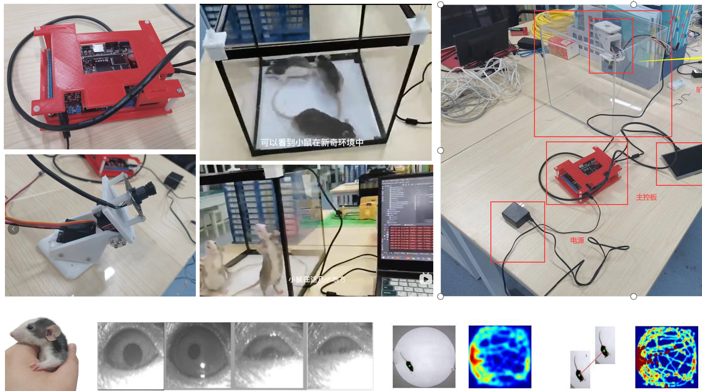
// CHALLENGE OVERVIEW
技术落地过程中的核心难点，既是对 现有动物行为分析技术局限性的延伸， 也是针对豚鼠家用监测场景的特有挑战
CHALLENGE 01
边缘端实时推理与精度双重约束
K230 NPU 上同时部署视觉（姿态识别、脚垫卡脚）与听觉（异常声音分类）模型；深度学习模型体积大、算力需求高，需进行轻量化裁剪与量化，实现毫秒级实时推理
CHALLENGE 02
复杂环境下的目标追踪鲁棒性
豚鼠体型小巧、动作敏捷，垫料、食盆易造成遮挡；单目俯视追踪在多只聚集时易目标丢失或轨迹漂移，需实现遮挡后的目标重识别
CHALLENGE 03
多模态融合与异常事件精准识别
融合视觉（轨迹、肢体姿态）与听觉（呼吸频率、叫声）数据；现有技术依赖单一模态，易受环境噪音或视觉干扰导致误报，需构建鲁棒的多模态判别模型
CHALLENGE 04
家用场景低功耗与稳定性设计
设备需满足 7天续航 + 24H 不间断监测；K230 算力调度、音视频采集、Wi-Fi 传输均高耗电，需动态调频调压与休眠唤醒机制协同优化
团队在小鼠行为分析、生猪健康监测等领域积累的计算机视觉与动物追踪技术 （多目标追踪算法、轻量化模型优化），为突破上述难点提供了 坚实的技术基础与实践经验
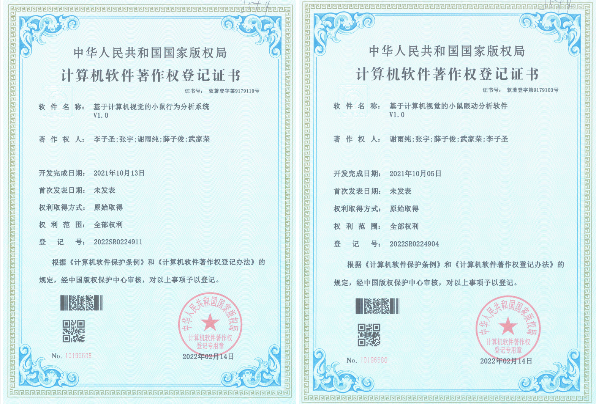
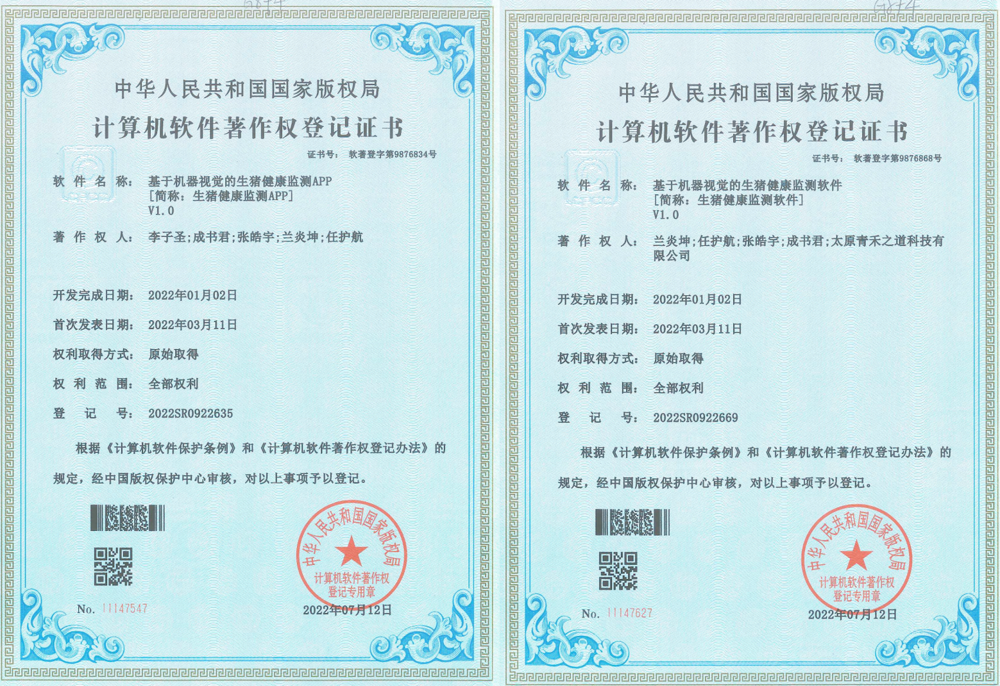
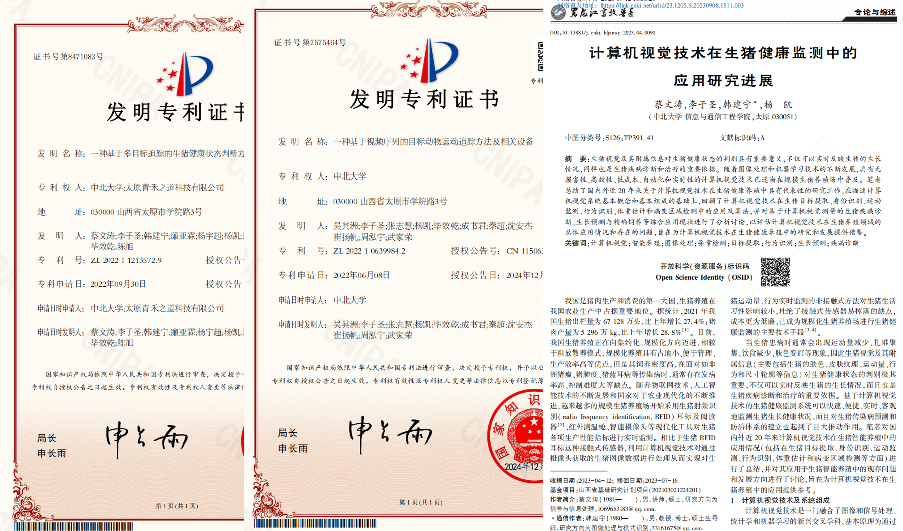
4
软件著作权
2
发明专利
// SOFTWARE COPYRIGHT × 4
// INVENTION PATENT × 2
// CORE JOURNAL PAPERS
《计算机视觉技术在生猪健康监测中的应用研究进展》等核心期刊论文
从实验室动物研究到规模化养殖应用的技术积累， 为豚宝保的视觉+听觉多模态监测、健康预警等核心功能提供了坚实的技术基础与实践验证
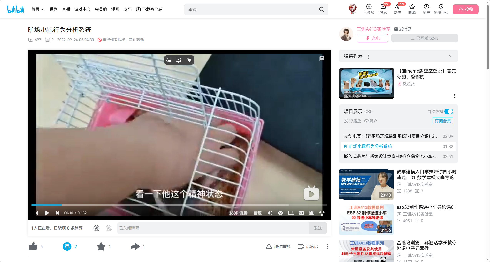
<50
推理延迟 / ms
92%
追踪准确率
25+
实时帧率 / fps
<8
模型大小 / MB
// CORE CAPABILITIES
多目标同步追踪
支持多只豚鼠同笼独立追踪，ID 不漂移
遮挡后目标重识别
垫料、食盆遮挡后自动恢复追踪
姿态估计与异常判定
脚垫卡脚、肢体异常毫秒级识别
K230 NPU 端侧推理
轻量化量化部署，无需云端，保护隐私
点击观看算法演示视频
bilibili.com · BV14G411g7db
PHASE 01
原型优化
1 – 2 个月
PHASE 02
小批量试产 & 内测
2 – 3 个月
PHASE 03
量产上市 & 渠道铺设
3 – 4 个月
PHASE 04
生态拓展
长期持续
M 1–2
M 3–5
M 6–9
LONG TERM
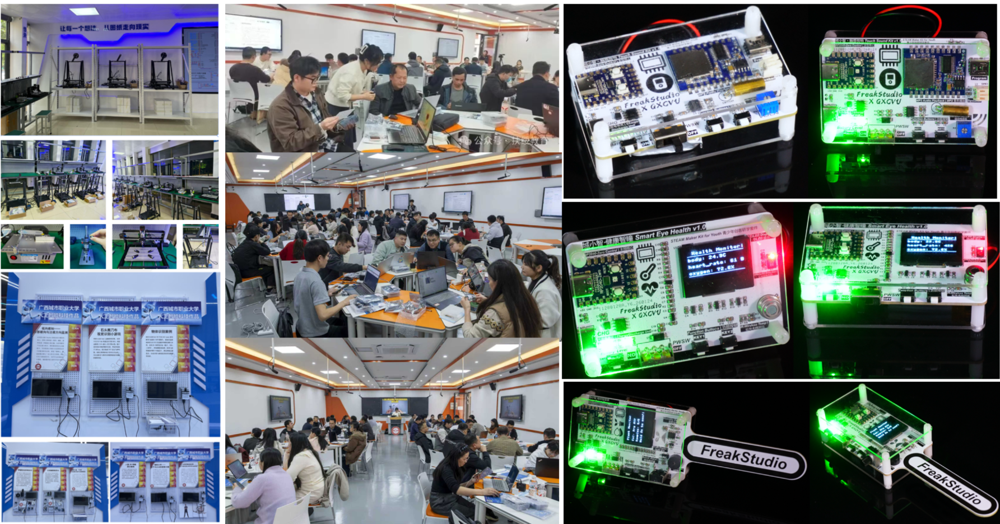
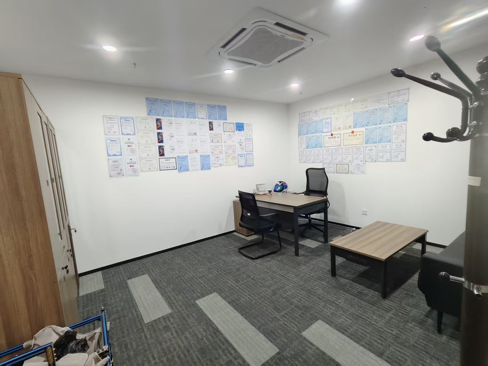
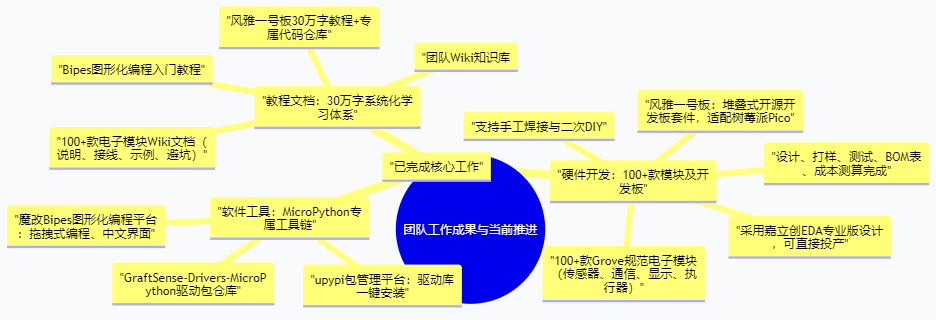
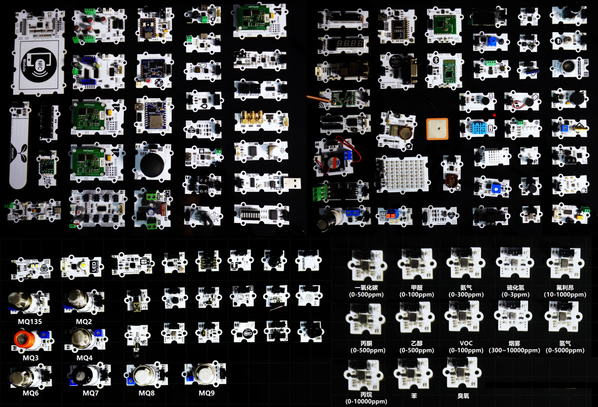
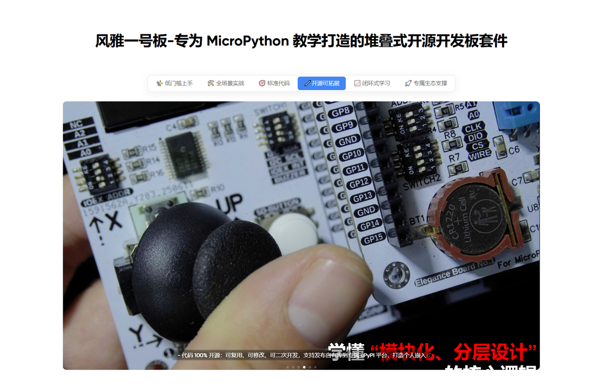
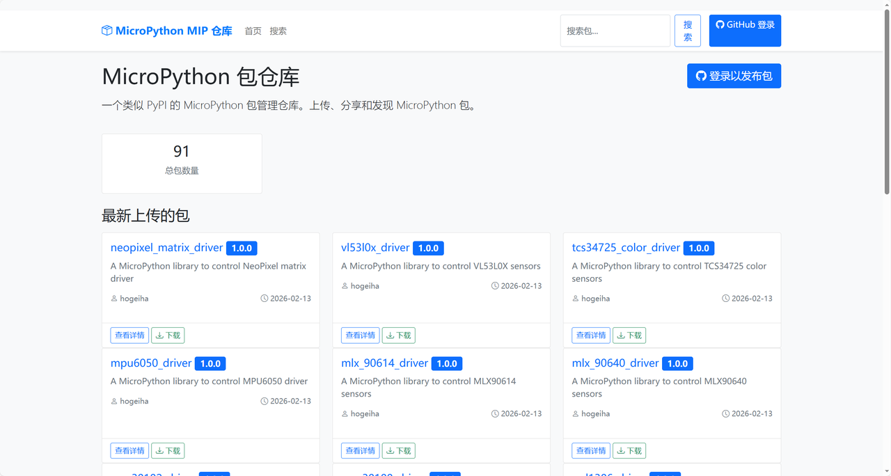
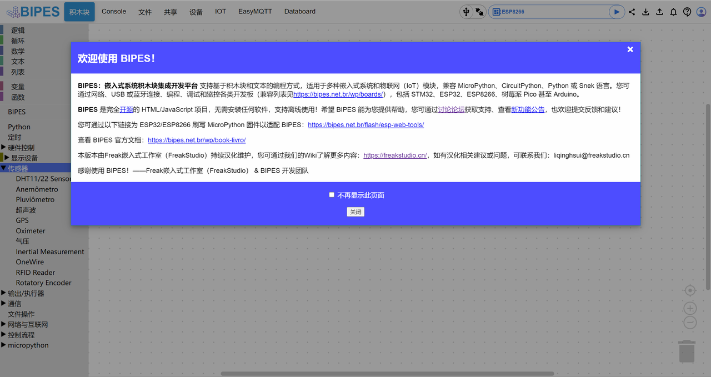
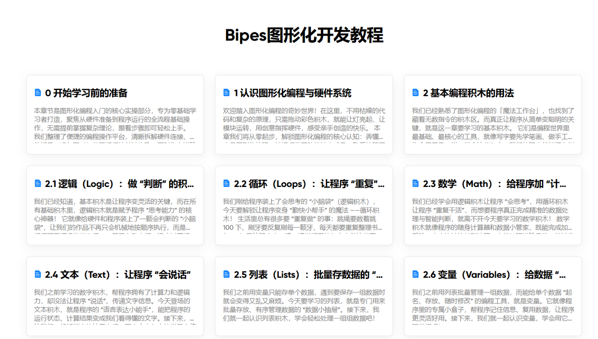
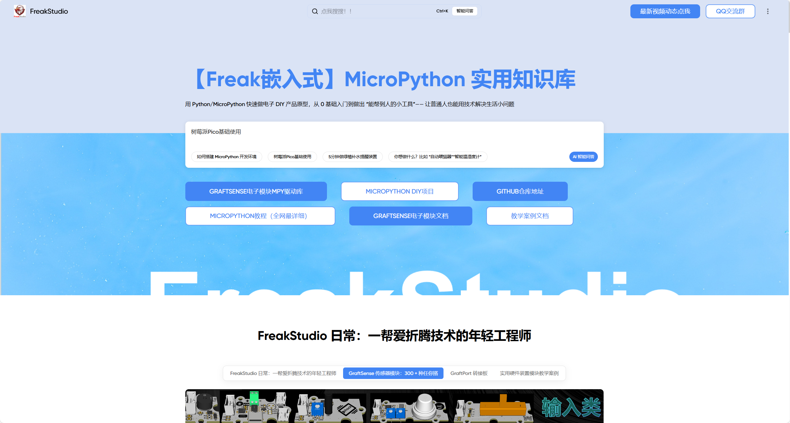
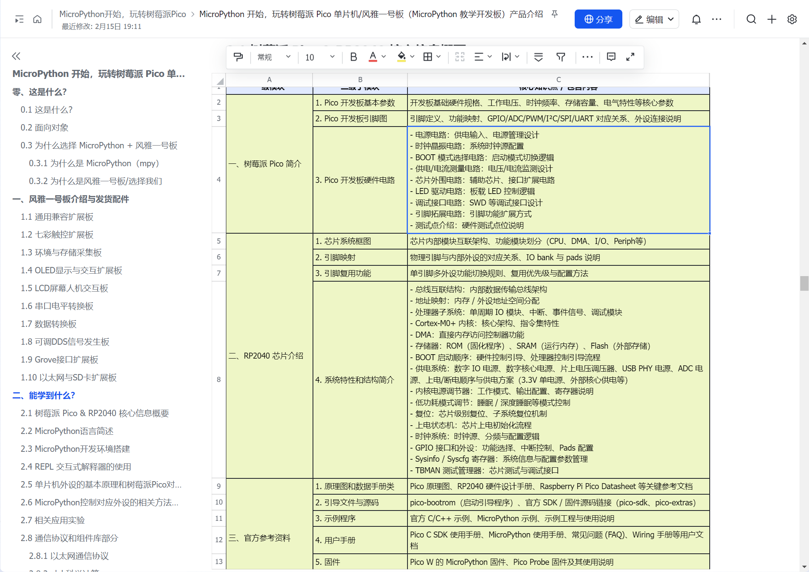